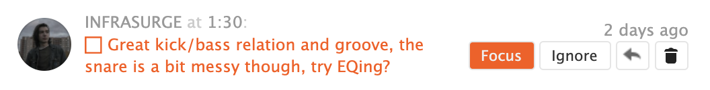
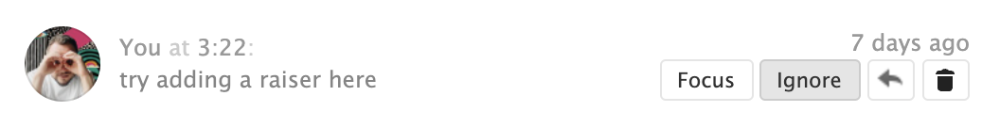

Hi there, this is
SoundCloud Task Manager
Use it to work with comments as they are tasks
Praise yourself
for what you've already done
for what you've already done
Focus
on what's important
on what's important

Ignore
what is not
what is not

Install to Chrome
it's free
SoundCloud Task Manager is the first part of the
Release Music Framework
The second part is this guide
- Listen to your track and write feedback on SoundCloud
- Use SoundCloud Task Manager for Chrome to deal with comments as they are tasks
- Choose a task to start with today
- Render each working session and upload to SoundCloud
- Are there any tasks left? Do at least 1 per week
- No? Release this track now!
- Use this free Online Mixer to compare different renders side by side and time-synced in a simple player
- Find out more details about the RMF workflow in the Notion post